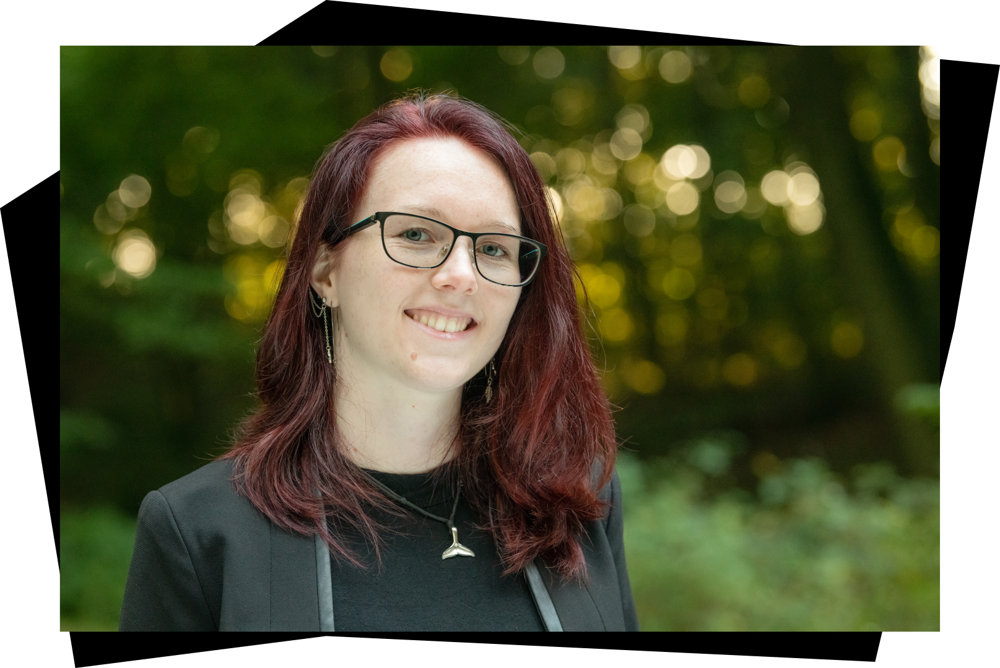

Hello, world.
Hi! I'm Ane Novrup Larsen
Imagining, creating, designing
Skills and projects
- CS50 programming course
- C language basics
- Python basics
- SQL basics
- HTML, CSS, JavaScript basics
- Flask basics
- Illustrator/logos
- Photoshop
- Video editing
Education
- 2023-2027 - Currently studying IT-architecture bachelor at KEA
- 2022-2023 - Skive College HHX (last year)
- 2021-2022 - High School in Costa Rica (10 months)
- 2019-2021 - Skive College HHX (first two years)
- 2018-2019 - Hammerum efterskole
- 2008-2018 - Aakjærskolen, Skive
About me
As you might have noticed, my name is Ane Novrup Larsen. I'm 21 years old and have just started my bachelor at KEA (Copenhagen Business Academy) in IT-architecture.
Creating digital content is nothing new for me. It started with making lots of Minecraft and Sims 3 building projects when I was younger, but now my projects are a bit more "grown-up" so to say. Over the years, I have been video editing, photo editing, making logos, designing webpages and more.
I've always been passionate about technology, and in 2022 I completed the online course called CS50x from Harvard University. Through the course, I learned the basics of programming and worked with different problem sets in C, Python, SQL, HTML, CSS, JavaScript and Flask.
What I like the most about technology is the opportunity to make just about whatever you want. You have the freedom to create, edit, save, and even undo if needed. Just by having a computer or another device, you have a world of options for your next project.
Nickname: DetGrey. Not black. Not white. But everything in between.